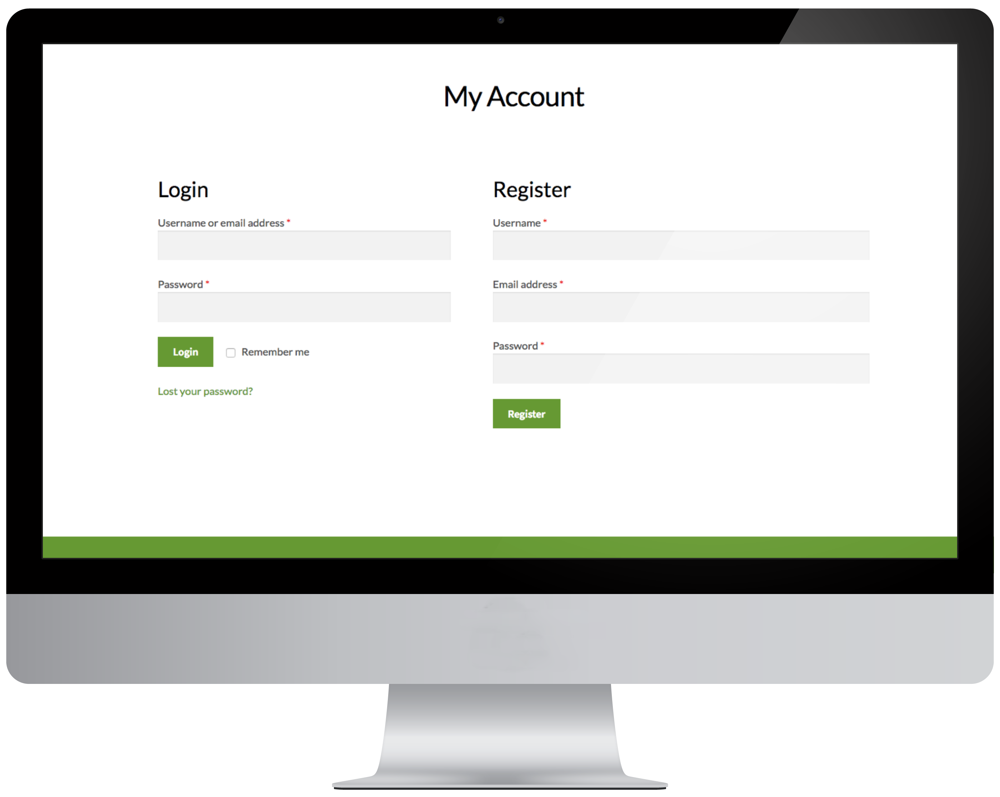
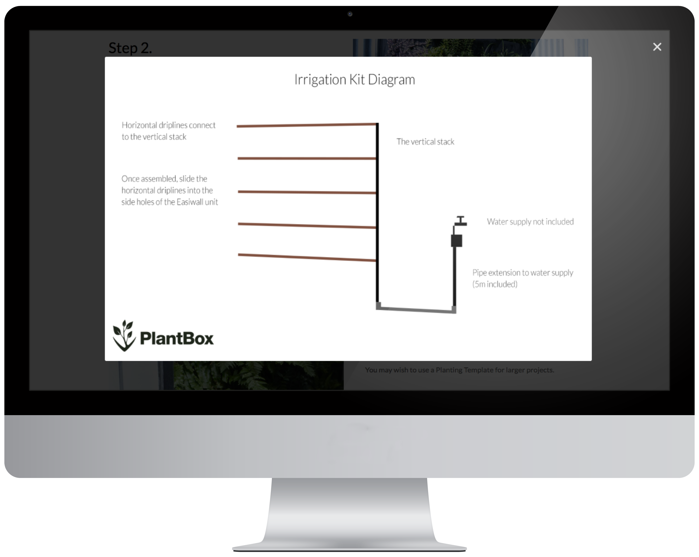

PlantBox: E-commerce Website Design.
Client
PlantBox is a small and ambitious company that sells sustainable planting systems for vertical gardens.
Users
Their users are urban dwellers with outdoor wall space who are keen to see more green. Landscape gardeners are already early adopters, but PlantBox would like to attract members of the public too.
Brief
Design and develop an an e-commerce website and branding for PlantBox from scratch.

Deliverables
A responsive and scalable e-commerce website with full payment / delivery integration and customer accounts (pictured above), along with a bold logo and brand identity.
Process
I included over 40 prototyped logos (from several different designers) into an online questionnaire and asked over 30 users within our target group for their opinions. The final logo was chosen and, in the process, we learned what type of brand image these users gravitate towards.
I prototyped the layout of the website firstly using paper, so that I could rapidly test the information hierarchy and accessibility. I realised that it made sense to "Shop By Category", as the PlantBox flagship product comes in 3 component parts.
The How it Works section is prominent on the page, and contains downloadable installation guides and diagrams (see example below). The brand aims to be accessible and show that PlantBox can be used by people who aren't necessarily DIY aficionados; our general public users have busy lifestyles.

Outcomes
The new website and bold brand identity are vital steps towards upscaling the startup, and have been favourably recognised by a national garden centre that is keen to collaborate.
I'm using: Google forms (user questionnaires) pencil and paper for rapid prototyping, Sketch app (wireframing), Wordpress & WooCommerce (e-commerce interface and back end), Photoshop and Illustrator (pdf guides, iconography).